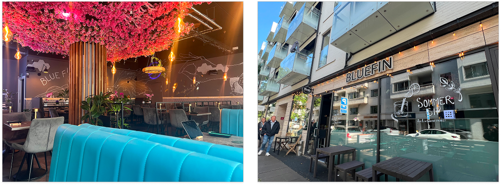
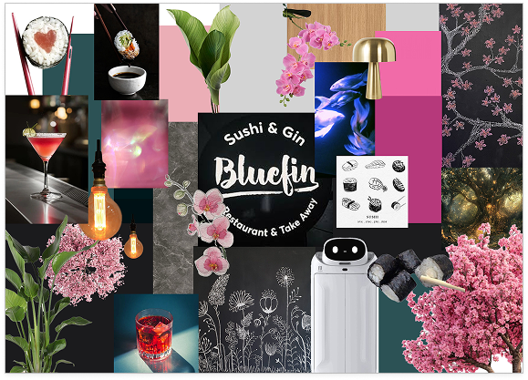
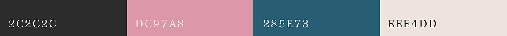
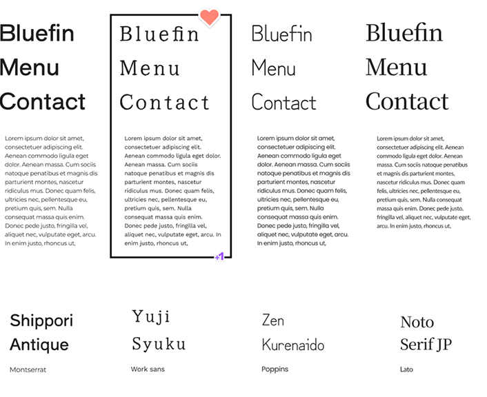
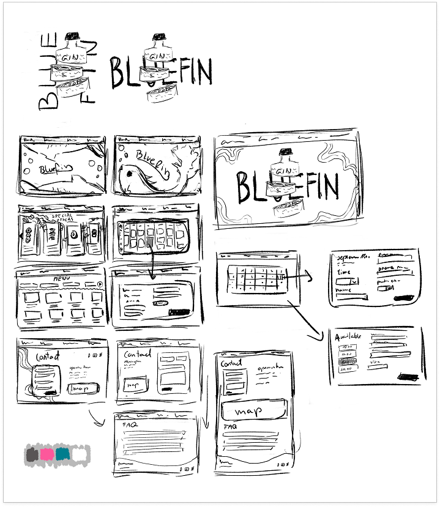
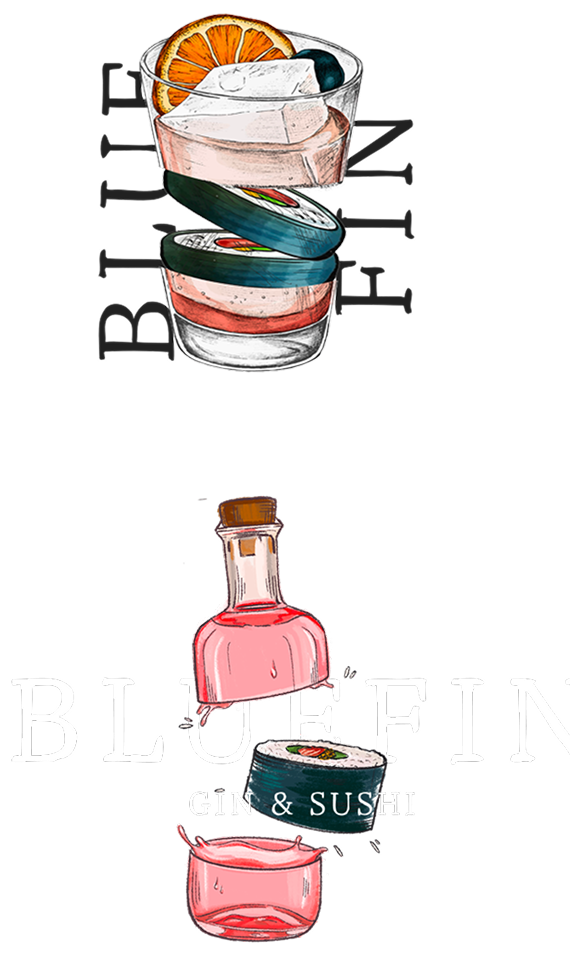
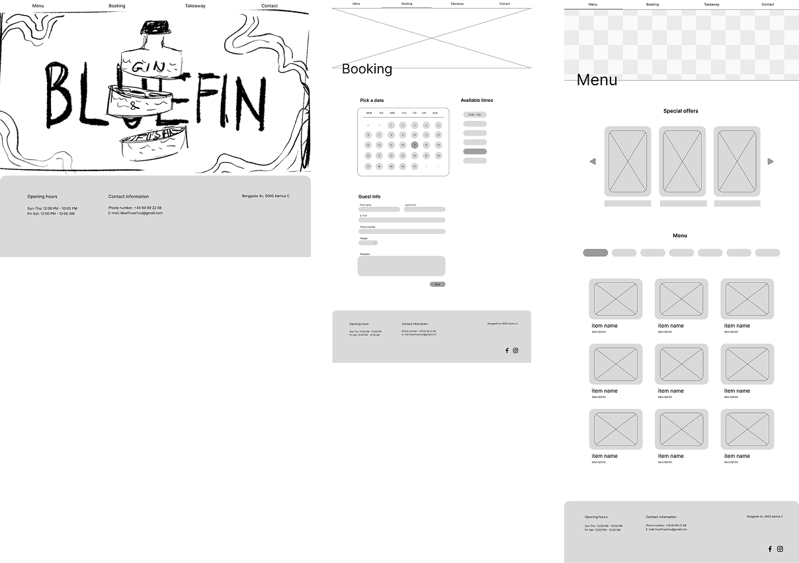
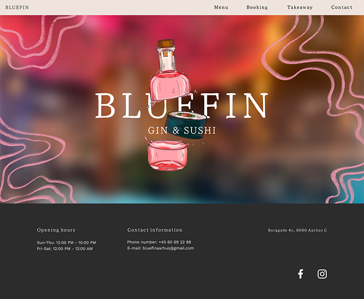
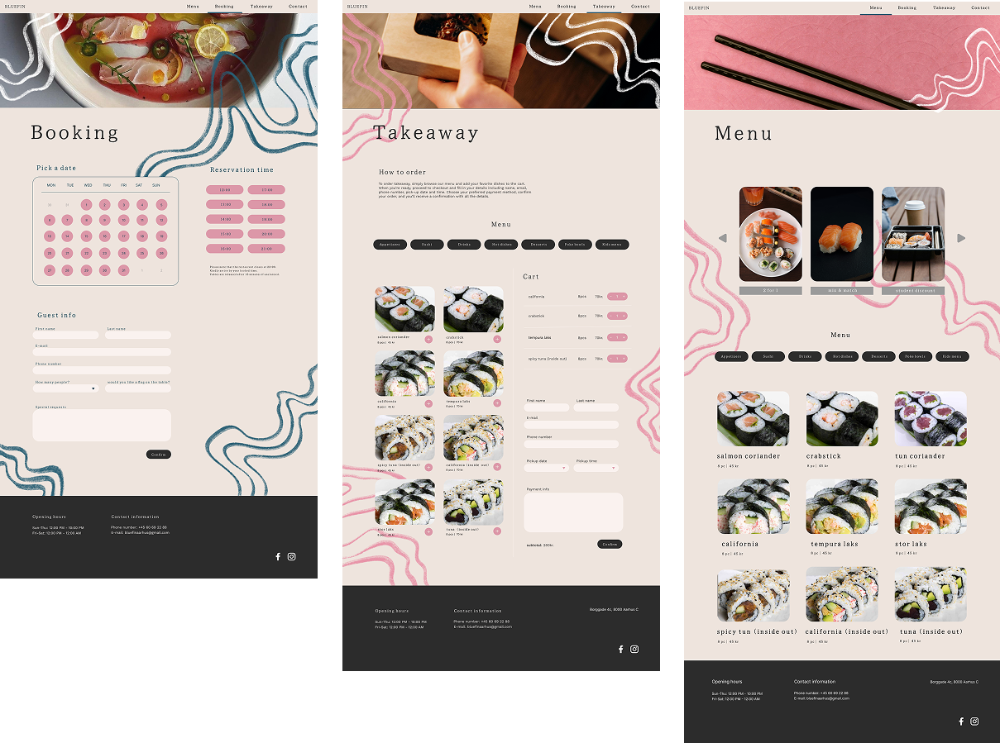

BLUEFIN
ROLE
USER RESEARCH
DESIGN
FRONT-END
LEARN ABOUT MY CREATIVE PROCESS

LEARN ABOUT MY CREATIVE PROCESS

A website redesign concept for a sushi restaurant in central Aarhus, focused on creating a clearer and more engaging experience for customers. The redesign aims to make it easier to explore the menu, understand offers, find important information, and book a table, while reflecting the restaurant’s affordable prices, quality food, and welcoming atmosphere.
Choosing a restaurant is about more than just the food. Customers want to know what is available, how much it costs, when they can visit, and whether the experience is worth it. However, unclear information about discounts, lunch and afternoon prices, all-you-can-eat options, opening hours, and menu choices can make the process confusing.
How can we redesign the website to make important information easier to find and understand, while highlighting the restaurant’s good-quality food, affordable prices, and welcoming atmosphere?

I started with desk research and interviews with eight people to understand how people choose places to visit, what they look for when planning an outing, and what they value when it comes to animals and experiences.
I used a mind map to organise my initial ideas and created a persona based on the research to keep the target user in mind throughout the project.

After collecting our research, we organised our findings to identify the most important patterns and user needs. We created an affinity diagram to group similar findings and an empathy map to better understand the customers' thoughts, feelings, needs, and frustrations. We also created information for the sushi listings, a list of values, and a list of requirements to define what the website should communicate and what functionality it needed.
These findings helped us establish the structure, content, and functionality of the redesigned website before moving into the development stage.

With our research and requirements defined, we began exploring how the website could be structured and how users would interact with it. We created a moodboard to establish the visual direction, followed by sketches and low-fidelity wireframes to explore different layouts and user flows.



Alongside the structure and functionality, we developed the visual identity of the website. We selected a colour palette inspired by the restaurant’s existing interior, helping the website feel connected to the physical space. We also chose fonts that we felt reflected the restaurant’s personality and helped establish the desired aesthetic.
Based on our requirements, we developed the main pages and features of the website:



In the final stage, we transformed our ideas and low-fidelity wireframes into a high-fidelity website prototype. We refined the visual style, layouts, content, and interactions to create a cohesive experience across the different pages.
The final design focuses on making important information clear, accessible, and easy to navigate, particularly when it comes to the menu, offers, opening hours, booking, and takeaway options.
Our goal was to create a website that not only makes the customer journey easier, but also reflects the restaurant itself - its atmosphere, affordable prices, quality food, and welcoming character.

